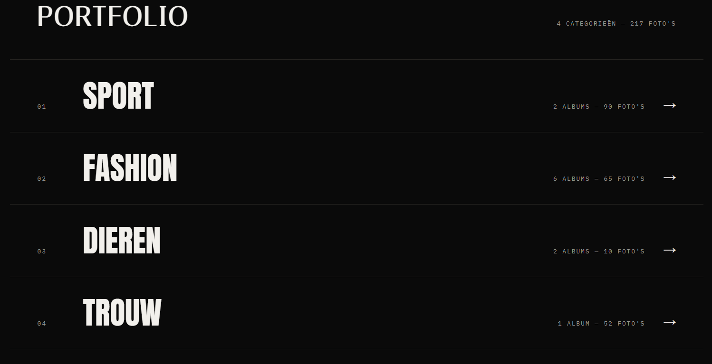
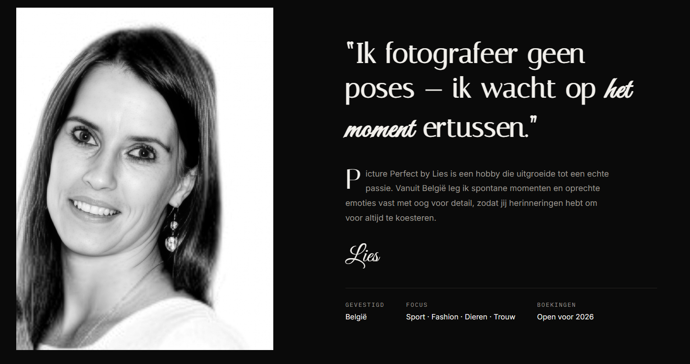
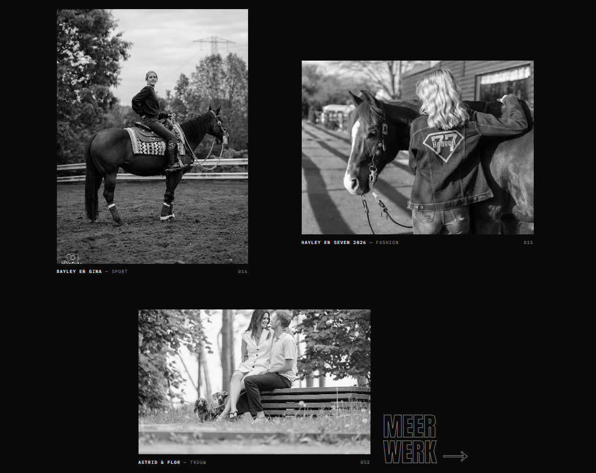
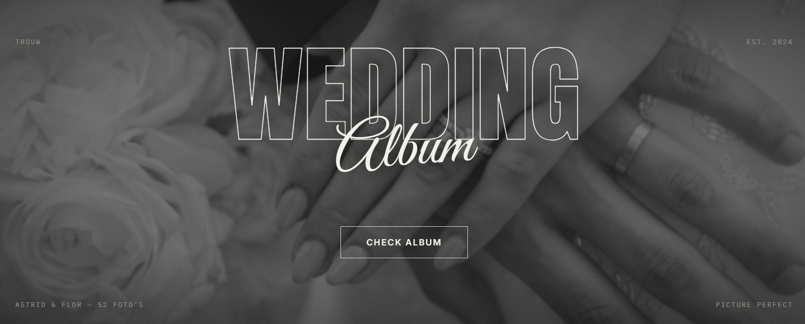

De opdracht
Een fotograaf wordt beoordeeld op haar beelden, dus de website moest uit de weg gaan. De vraag was een portfolio dat redactioneel en zelfzeker aanvoelt, de breedte van het werk toont zonder een muur van thumbnails te worden, en een shoot boeken moeiteloos maakt.
De look
Strikt zwart-wit, grote gecondenseerde letters en een gesplitste hero: het woordmerk aan de ene kant, een sterke foto aan de andere. Het hoge contrast houdt de aandacht bij de fotografie en geeft de hele site het gevoel van een galerie, terwijl een handgeschreven accent het persoonlijk houdt in plaats van zakelijk.

Structuur boven rommel
In plaats van elke foto op één pagina te dumpen, is het werk opgedeeld in genummerde categorieën, elk met het aantal albums en foto's erachter. Bezoekers kiezen waarvoor ze komen en landen er meteen in, wat de homepage rustig houdt en een groot archief overzichtelijk maakt.

De persoon achter de lens
Een fotograaf kiezen is een persoonlijke beslissing, dus de oversectie opent met een portret en een quote in haar eigen woorden, met de praktische details, specialisatie, focus en beschikbaarheid, er meteen naast. Het beantwoordt de vraag "met wie werk ik straks" nog voor de bezoeker ze moet stellen.

Beweging & flow
Vloeiend scrollen met inertie verbindt de secties en beelden verschijnen wanneer ze in het scherm komen, waardoor de pagina aanvoelt alsof ze gepresenteerd wordt in plaats van geladen. Een raster met recente albums houdt de site actueel, en een boekingsknop blijft de hele weg naar beneden binnen bereik.

Het resultaat
Een portfolio dat leest als een magazinespread, snel laadt omdat het met de hand gecodeerd is, en even goed werkt op een telefoon. De fotografie blijft de ster, en de duidelijke weg naar boeken zet browsen om in aanvragen.